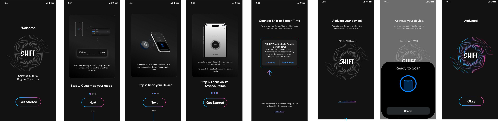
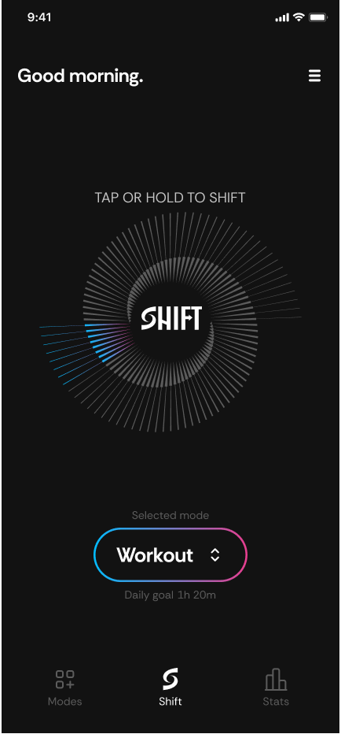
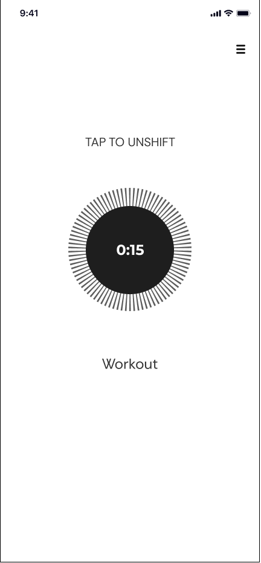
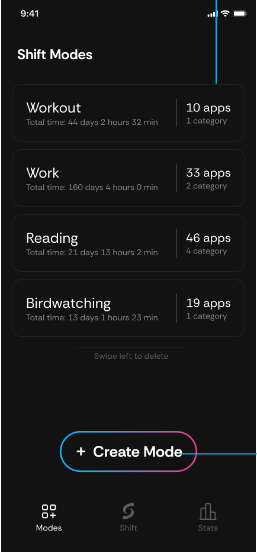
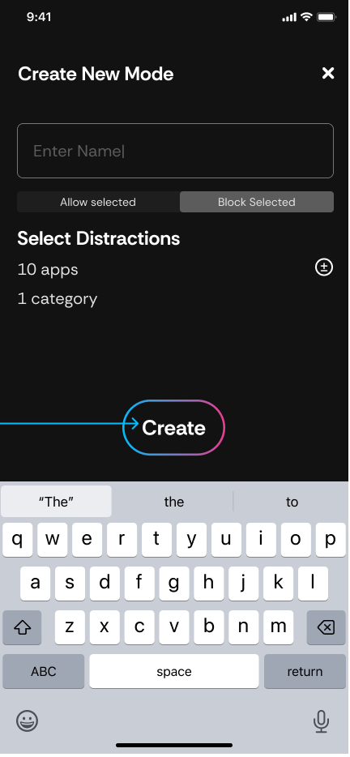
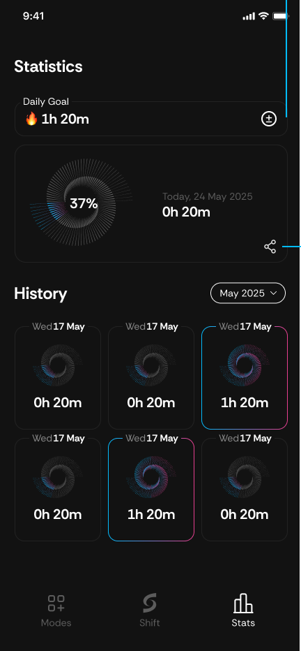
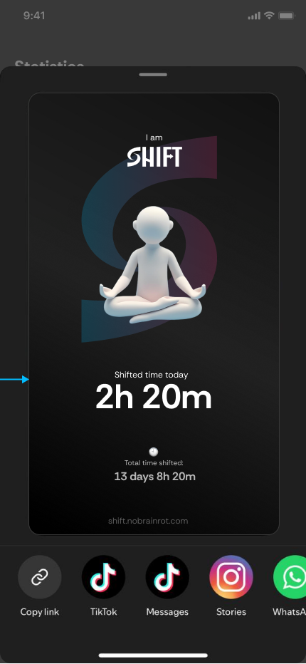
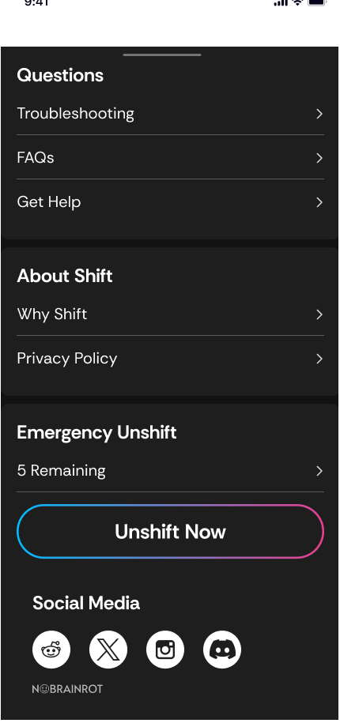

Make your phone a tool, not an addiction mechanism
Shift, by NOBRAINROT, is a focus system in two parts: a physical NFC device and an iOS app. Tap or hold your phone against the Shift and it "shifts" — the apps you've marked as distractions lock, a timer starts, and the screen goes calm. Tap again to unshift. In between, the app tracks every minute of reclaimed attention as progress toward a daily goal.
I designed the complete product experience: onboarding and device activation, the main shift flow, the mode system, statistics and social sharing, and the marketing landing page that sells the device.
Software blockers lose to a swipe
Everyone with a screen-time problem has tried an app blocker — and everyone knows the ritual of disabling it eight seconds later. Pure-software solutions fail because the escape hatch lives on the same glowing rectangle as the temptation. The cost of giving up is one tap, made in the exact moment your willpower is weakest.
Shift's answer is to move the off-switch into the physical world. Unshifting means physically reaching for the device — a small, deliberate action that breaks the autopilot loop. The design brief followed from that: make shifting feel rewarding and effortless, make unshifting feel conscious, and never shame the user for either.
Three steps from box to first focus session
Onboarding compresses a hardware pairing, an iOS Screen Time permission, and a new mental model into one linear flow: customize your mode → scan your device → focus on life. The Screen Time request is framed honestly on Apple's own dialog, with a plain-language promise underneath — your data is protected by Apple and stays 100% on your phone. Activation reuses the radial spiral motif: the ring ignites in the brand gradient the moment the NFC handshake succeeds, so success needs no caption.

Two states, two moods — by design
The home screen greets you ("Good morning."), shows the selected mode and daily goal, and puts one instruction center-stage: TAP OR HOLD TO SHIFT. The spiral around the logo doubles as the daily-goal progress ring, filling with the gradient as you accumulate focused time.
Shifted, the app inverts to white and empties out: a monochrome timer, the mode name, and "TAP TO UNSHIFT." Nothing animates, nothing glows, nothing rewards looking at it — the calmest screen in the app is the one you see while you're supposed to be living your life.



Progress you can feel — and post
Modes are blocklists with personality: name one, choose allow-selected or block-selected, pick the apps and categories that count as distractions for that context, and save. Each mode accumulates its own total ("Work — 160 days 4 hours saved"), turning an abstract habit into a scoreboard.
The Stats tab shows today's ring against the daily goal, a streak counter, and a month of daily spirals — denser spiral, deeper focus. The share card turns a good day into social proof: a meditating figure on the gradient "S," today's shifted time, and the lifetime total, exported straight to TikTok, Stories, or WhatsApp. Growth loop and reward system in one screen.



Accessibility and honesty, built into the pixels
- Contrast first — near-white text on near-black surfaces puts primary content far beyond WCAG AA; the inverted shifted screen keeps the same ratios in reverse, so both states read in sunlight and at arm's length.
- Color is never the only signal — progress is shown by spiral density, a percentage, and a time numeral together; the gradient is reinforcement, not information. Disabled states (a spent "Unshift Now") change fill, outline, and label weight — visible to color-blind users.
- One accent, one meaning — the blue-to-pink gradient is reserved exclusively for interactive elements: mode pill, Create, Save, Unshift Now. If it glows, you can tap it; everything static stays monochrome.
- Generous touch targets — full-width pill buttons and an entire spiral ring as the shift trigger; the core action works without precision, mid-workout, with wet hands.
- Low-stimulation lock screen — the shifted state strips color, motion, and reward loops so the screen itself stops competing for attention. The calm is the feature.
- Native iOS patterns — Apple's own Screen Time dialog, share sheet, and wheel time-picker are used untouched, so consent, sharing, and goal-setting feel familiar and trustworthy from first use.
- An honest escape hatch — Emergency Unshift exists, but it's budgeted (5 per period, counted down in plain sight). Friction with dignity: the app never traps you, it just makes giving up a decision instead of a reflex.
- Privacy as copy, not fine print — "protected by Apple, stays 100% on your phone" sits directly under the permission ask, in body text, before the user commits.

A ritual, not another blocker
Shift turns focus into a physical gesture with a visible payoff: modes that remember every saved hour, a daily ring worth closing, and a share card that makes discipline something to show off. The design's job was to stay out of the way at the moment of focus and show up warmly at the moment of progress — and every screen was built around that split.